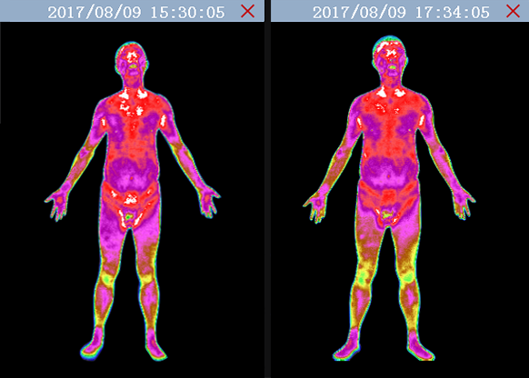

<div class="solution-view">
    <div class="solution-content" #solution [@pulse]="solutionfalg ? 'closed' : 'enter'">
        <p class="title">解决方案</p>

        <div class="container maxwidth">
            <div class="row align-items-center">
                <div class="col-lg-6 col-md-12 col-sm-12 col-xs-12">
                    
                </div>
                <div class="col-lg-6 col-md-12 col-sm-12 col-xs-12">
                    <div class="list-box">
                        <p class="text-title">高血压健康生活方式解决方案</p>
                        <p class="text-descript textleft">
                            介绍： 高血压患者完成中医可视化检测后，系统根据能量偏离程度辨证分型，结果见于 “红外印象”，并提出治疗方案，即 “建议”。此外，系统还能自动为患者生成“任督二脉图”，提示患者任督二脉腧穴的气机阻滞点及阻滞程度。参照“建议”及“任督二脉图”，治疗师可使用经络灸导仪对相应的腧穴施治。需要注意的是，对于危重患者，譬如心脏投影区有严重能量偏离者，宜先采用内治。医师可使用“匹配经方”功能模块，从系统自动匹配的方药中选择最佳方案。待患者服用一段时间后，重新进行中医可视化检测。如心脏能量的异常偏离得到缓解，再根据新的“红外印象”、“建议”及“任督二脉图”确定经络灸导仪的施术腧穴。除使用经络灸导仪、服用中药外，系统还能为患者提供运动养生操、食疗方及适宜使用的食品等健康生活解决方案。医师可于治疗前及治疗后分别为患者测量血压，监测治疗效果。
                        </p>
                        <p class="bottom-text textleft">1.胸腹静态比较，肺部投影区干预后热态分布明显减弱。</p>
                        <p class="bottom-text textleft">2.盆腔投影区干预后热态分布明显减弱，热态分布整体趋向均匀。</p>
                    </div>
                </div>

            </div>
        </div>
    </div>
</div>